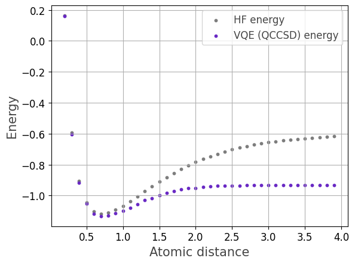
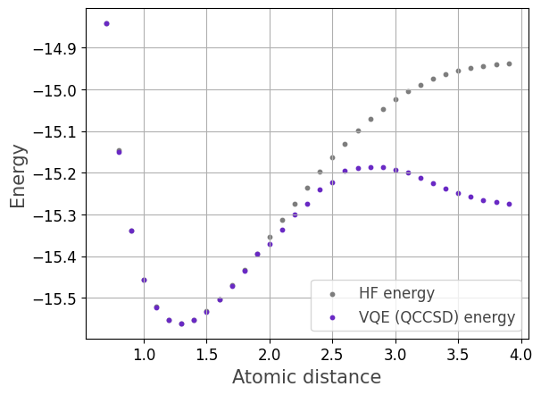

Molecular Potential Energy Curves#
Molecular potential energy curves and surfaces are tools in computational quantum chemistry for analysing the molecular geometries and chemical reactions. The potential energy is defined as
$$E_{\text{pot}}(\{R_A\})=E_{\text{elec}}(\{R_A\})+E_{\text{nuc}}(\{R_A\})$$
where \(E_{\text{elec}}(\{R_A\})\) is the electronic energy and \(E_{\text{nuc}}(\{R_A\})\) is the nuclear repulsion energy depending on the coordinates of the nuclei \(\{R_A\}\).
Example Hydrogen#
We caluclate the potential energy curve for the Hydrogen molecule for varying interatomic distance.
We implement a function problem_data that sets up a molecule and
utilizes the PySCF quantum chemistry library to compute the electronic data (one- and two-electron integrals, number of orbitals, number of electrons, nuclear repulsion energy, Hartree-Fock energy)
for a given molecular geometry. In this example, we vary the interatomic distance, i.e., the distance between the two Hydrogen nuclei.
from pyscf import gto
from qrisp.vqe.problems.electronic_structure import *
from qrisp import QuantumVariable
def problem_data(r):
mol = gto.M(
atom = f'''H 0 0 0; H 0 0 {r}''',
basis = 'sto-3g')
return electronic_data(mol)
Next, we define an array of interatomic distances. For each distance r we compute the electronic data including the Hartree-Fock energy.
Then we utilize the electronic_structure_problem method to create a VQEProblem for the given electronic data. By default, the QCCSD ansatz is utilized.
VQE is a probabilistic algorithm and may not yield the optimal solution every time.
Therefore, we run VQE five times for each instance and select the minimal energy that was found.
For more acurate results we adjust the measurement precision mes_kwargs={'precision':0.005}.
distances = np.arange(0.2, 4.0, 0.1)
y_hf = []
y_qccsd = []
for r in distances:
data = problem_data(r)
y_hf.append(data['energy_hf'])
vqe = electronic_structure_problem(data)
results = []
for i in range(5):
res = vqe.run(QuantumVariable(data['num_orb']),depth=1,max_iter=50,optimizer='COBYLA',mes_kwargs={'precision':0.005})
results.append(res+data['energy_nuc'])
y_qccsd.append(min(results))
Finally, we visualize the results.
import matplotlib.pyplot as plt
plt.scatter(distances, y_hf, color='#7d7d7d',marker="o", linestyle='solid',s=10, label='HF energy')
plt.scatter(distances, y_qccsd, color='#6929C4',marker="o", linestyle='solid',s=10, label='VQE (QCCSD) energy')
plt.xlabel("Interatomic distance (Angstrom)", fontsize=15, color="#444444")
plt.ylabel("Energy (Hartree)", fontsize=15, color="#444444")
plt.legend(fontsize=12, labelcolor="#444444")
plt.tick_params(axis='both', labelsize=12)
plt.grid()
plt.show()

Example Beryllium hydride#
We caluclate the potential energy curve for the Beryllium hydride molecule for varying interatomic distance.
As in the previous example, we set up a function that computes the electronic data for
the Beryllium hydride molecule for varying interatomic distance, i.e., the distance between the Beryllium and Hydrogen nuclei.
from pyscf import gto
from qrisp.vqe.problems.electronic_structure import *
from qrisp import QuantumVariable
def problem_data(r):
mol = gto.M(
atom = f'''Be 0 0 0; H 0 0 {r}; H 0 0 {-r}''',
basis = 'sto-3g')
return electronic_data(mol)
We further investigate the problem size:
data = problem_data(2.0)
print(data['num_orb'])
print(data['num_elec'])
H = create_electronic_hamiltonian(data).to_qubit_operator()
print(H.len())
In the chosen sto-3g basis, there are 14 molecular orbitals (qubits) and 6 electrons. The problem Hamiltonian has 666 terms. For reducing the problem size, an active space reduction is applied: We consider 6 active orbitals and 2 active electrons, that is,
4 electrons occupy the 4 lowest energy molecular orbitals
2 electrons are distributed among the subsequent 4 molecular orbitals (quantum optimization)
the remaining (highest energy) 6 orbitals are not occupied
This lowers the quantum resource requirements to 4 qubits, and a reduced 4 qubit Hamiltonian is considered.
Warning
The following code may well take more than 10 minutes to run!
distances = np.arange(0.2, 4.0, 0.1)
y_hf = []
y_qccsd = []
for r in distances:
data = problem_data(r)
y_hf.append(data['energy_hf'])
vqe = electronic_structure_problem(data,active_orb=4,active_elec=2)
results = []
for i in range(5):
res = vqe.run(QuantumVariable(6),depth=2,max_iter=100,optimizer='COBYLA',mes_kwargs={'precision':0.005})
results.append(res+data['energy_nuc'])
y_qccsd.append(min(results))
Finally, we visualize the results.
import matplotlib.pyplot as plt
plt.scatter(distances[5:], y_hf[5:], color='#7d7d7d',marker="o", linestyle='solid',s=10, label='HF energy')
plt.scatter(distances[5:], y_qccsd[5:], color='#6929C4',marker="o", linestyle='solid',s=10, label='VQE (QCCSD) energy')
plt.xlabel("Interatomic distance (Angstrom)", fontsize=15, color="#444444")
plt.ylabel("Energy (Hartree)", fontsize=15, color="#444444")
plt.legend(fontsize=12, labelcolor="#444444")
plt.tick_params(axis='both', labelsize=12)
plt.grid()
plt.show()
